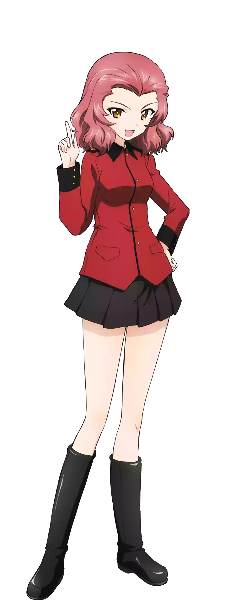
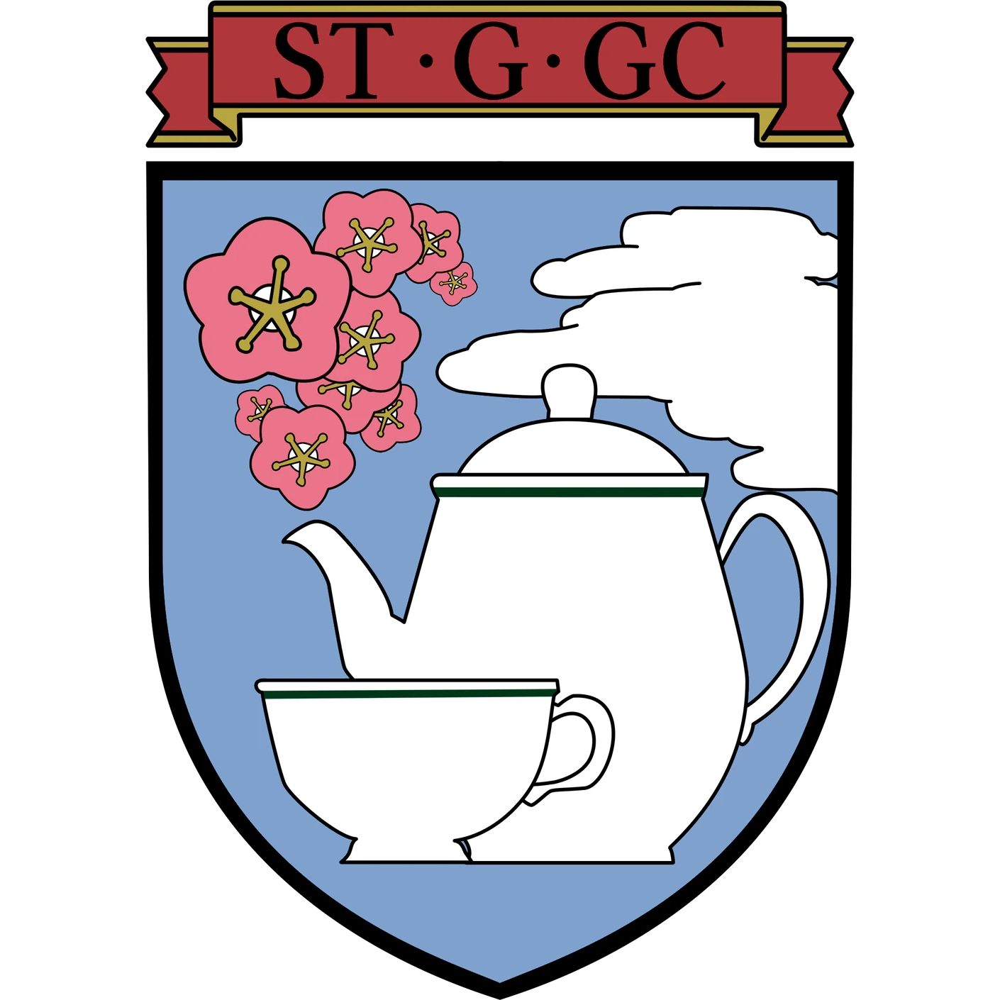
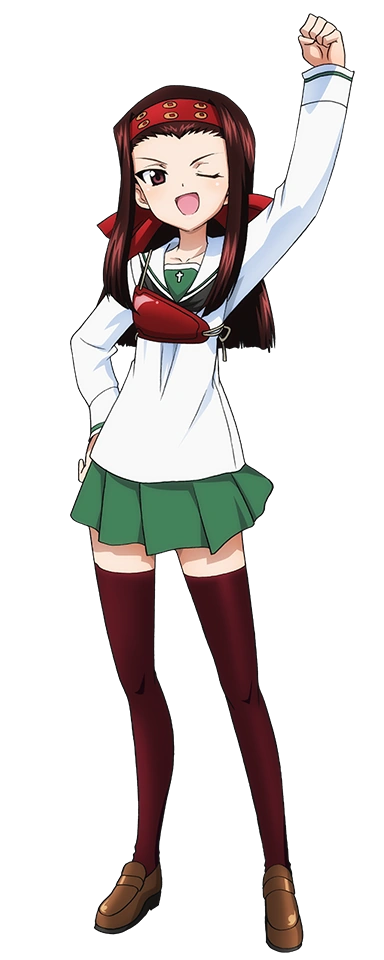
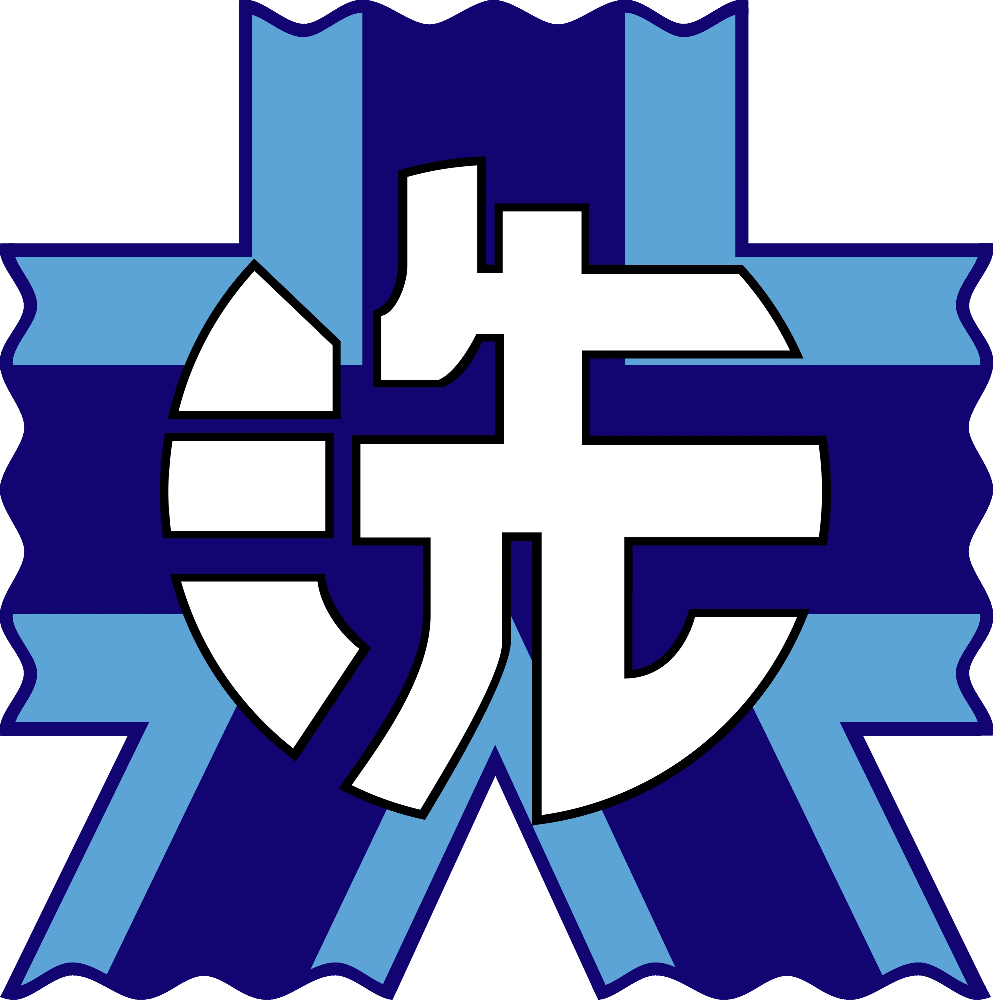
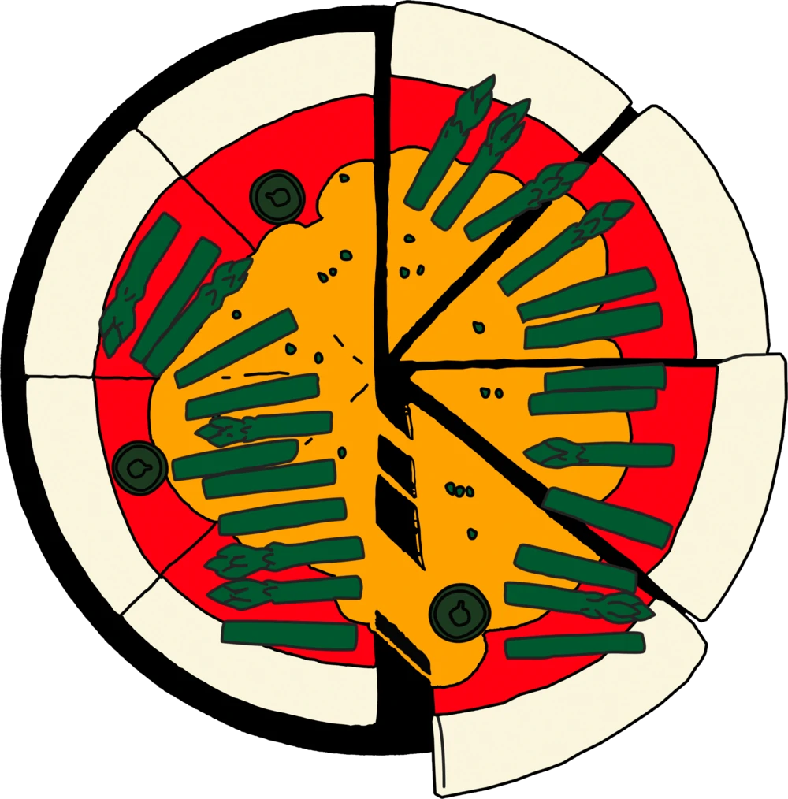
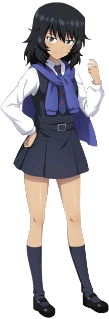
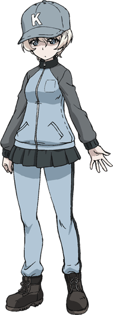
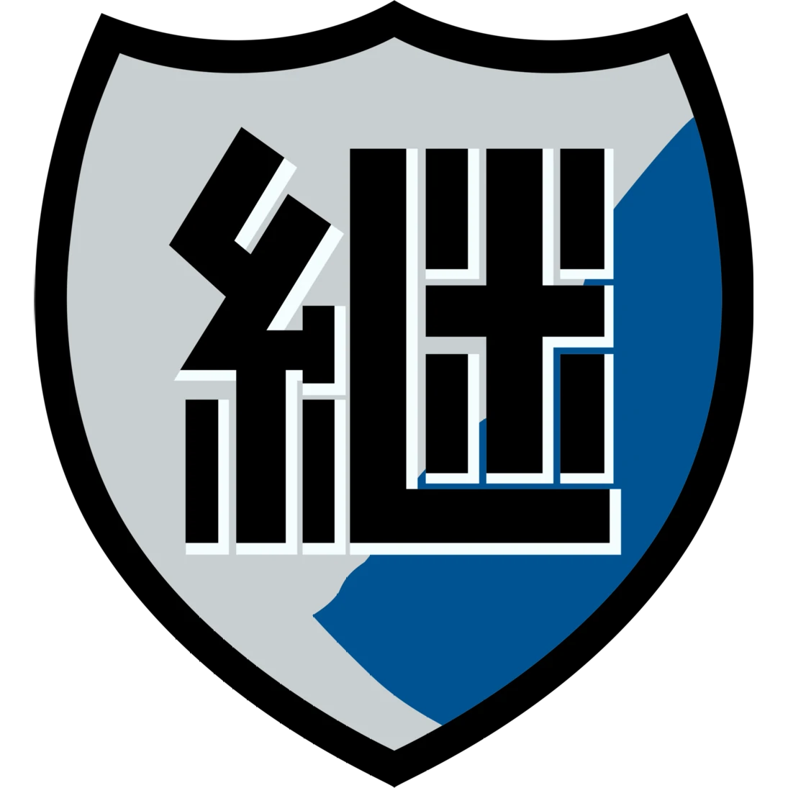
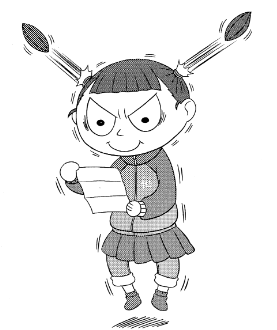

| Image | Description | Info |
|---|---|---|
|  | Rosehip is a first year student at St. Gloriana Girls College and the Commander of her Crusader Tank Platoon. She is very energetic and a speedy runner, she does everything fast to complete tasks as soon as possible to finish first. She doesn't restrain herself when going after something, not caring about failure. Rosehip naturally lacks gracefulness, elegance and manners of a typical St. Gloriana student. |
Birthdate: November 25th Affiliation(s): St. Gloriana Girls College Role(s): Tank Commander Tank(s): Cruiser Tank Mk.VI Crusader Mk.III Light Tank Mk.VII Tetrarch  |
|  | Saemonza is a second year student at Ooarai Girls High School and the gunner of Hippo team's Stug III. She is a member of the history buffs club. She is well known for her expertise on history of the Sengoku Period. She usually closes her left eye like she is aiming her bow. |
Birthdate: December 3rd Affiliation(s): Ooarai Girls High School Role(s): Gunner Tank(s): Sturmgeschütz III T-60  |
| Anchovy is a student from Anzio Girls High School, and is the overall commander of the school's Sensha-Dō team. She uses the italian P40 and CV.33. She is a capable tactician, although her plan failed due to her subordinates mistakes she reacted impulsively. |
Birthdate: September 23rd Affiliation(s): Anzio Girls High School Role(s): Overall Commander Tank Commander Tank(s): Carro Armato P40 Carro Veloce CV.33  |
|
|  | Andou is a student of BC Freedom. She is the vice-commander from the Examination Faction, she commands an SOMUA S35 with the "Green Spade" emblem. She holds a grudge against the Escalator Faction, often criticizing her commander. she is capable of putting her animosity aside to achieve victory. |
Birthdate: April 23rd Affiliation(s): BC Freedom Academy Role(s): Vice-Commander Tank Commander Tank(s): SOMUA S35  |
|  | Nicknamed the "White Witch", Jouko has a quiet, focused, and serious personality befitting that of a sniper. She can also be fun and friendly, being seen having some fun playing with some toddlers as she visted a daycare during Christmas Time. |
Birthdate: September 3rd Affiliation(s): Jatkosota Girls High School Role(s): Gunner Tank(s): StuG III Ausf.G / Sturmi  |
References:
- Wiki, C. T. G. U. P. (n.d.). Rosehip. Girls Und Panzer Wiki. https://gup.fandom.com/wiki/Rosehip
- Wiki, C. T. G. U. P. (n.d.-b). Saemonza. Girls Und Panzer Wiki. https://gup.fandom.com/wiki/Saemonza
- Wiki, C. T. G. U. P. (n.d.-a). Anchovy. Girls Und Panzer Wiki. https://gup.fandom.com/wiki/Anchovy
- Wiki, C. T. G. U. P. (n.d.-b). Rena Andou. Girls Und Panzer Wiki. https://gup.fandom.com/wiki/Rena_Andou
- Wiki, C. T. G. U. P. (n.d.-b). Jouko. Girls Und Panzer Wiki. https://gup.fandom.com/wiki/Jouko
submitted by MARCUS DE LEON 💜
